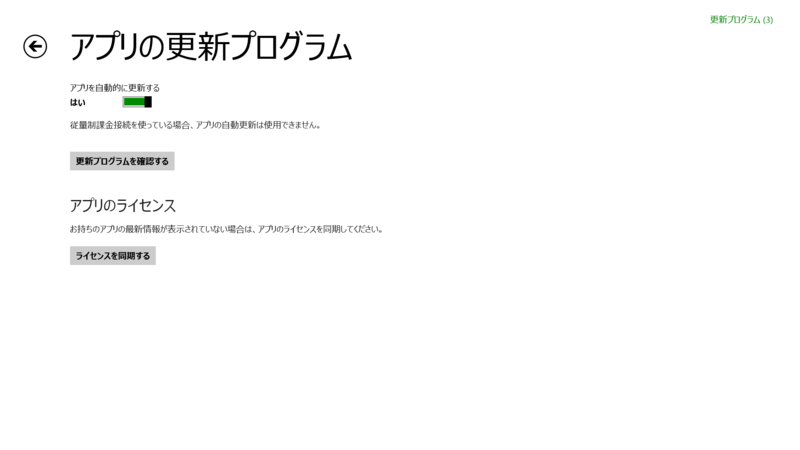
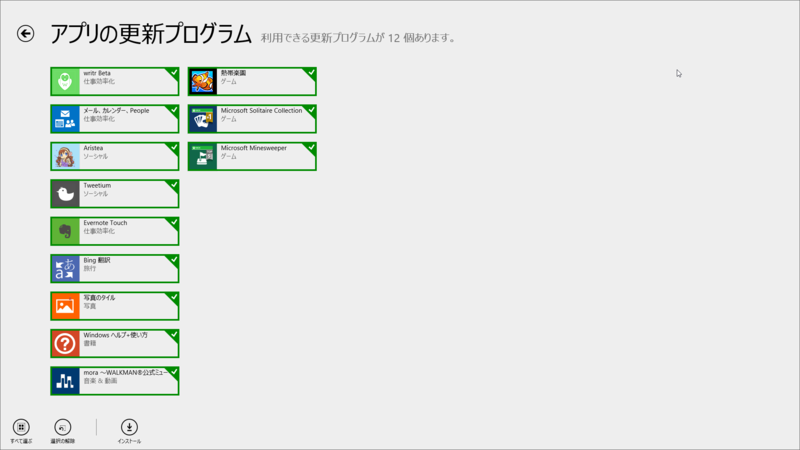
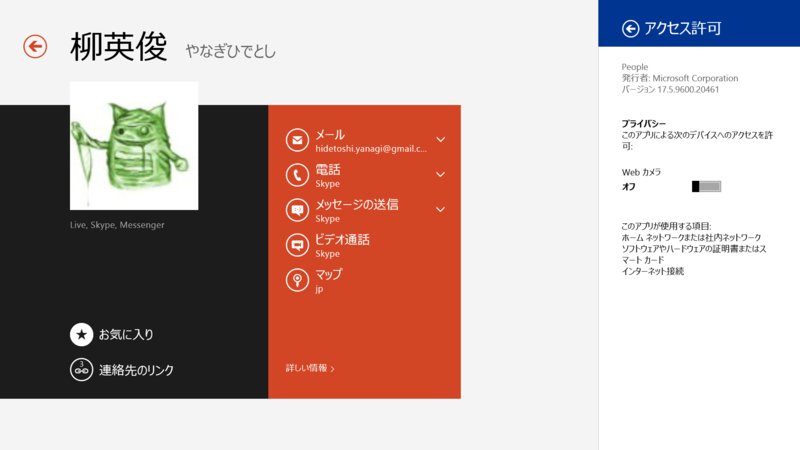
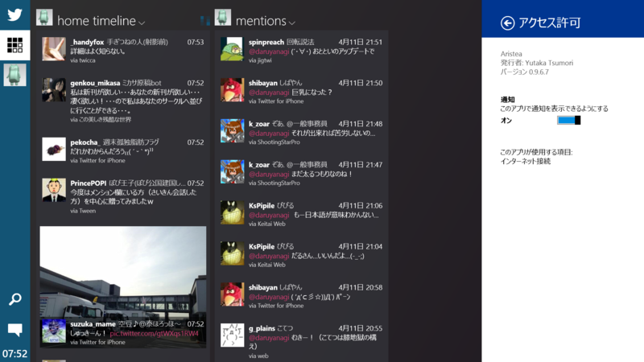
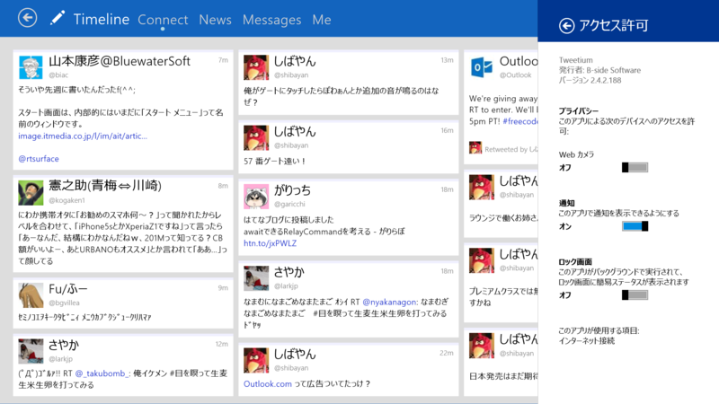
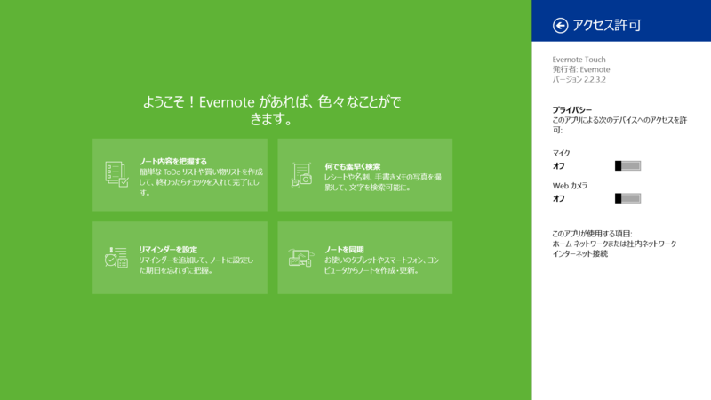
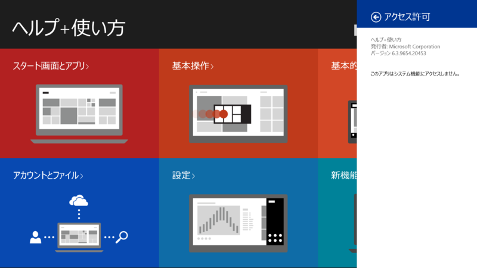
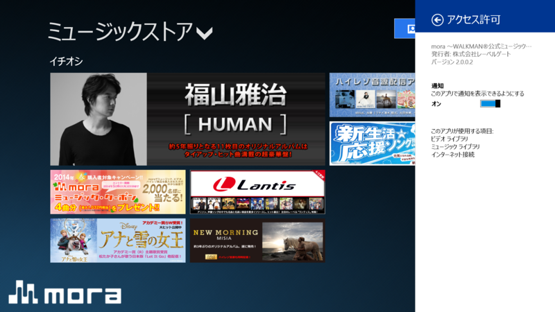
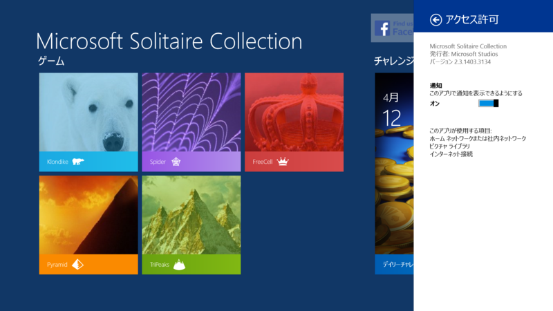
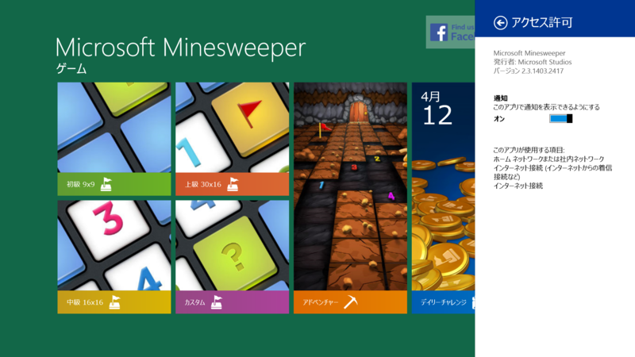

メール、カレンダー、People 17.5.9600.20461、Aristea 0.9.6.7、Tweetium 2.4.2.188、Evernote Touch 2.2.3.2、Bing 翻訳 1.7.2.0、Windows ヘルプ+使い方 6.3.9654.20453、mora ～WALKMAN®公式ミュージックストア～ 2.0.0.2、Microsoft Solitaire Collection 2.3.1403.3134
公開日：

いつもは Windows ストア アプリの自動更新を無効にしているのだが、Windows 8.1 Update（2014 Spring）にしたら勝手に有効化されていた。まぁ、細かいことだけど、こういう設定は許可なくいじらないでほしいものだと思う。

メール、カレンダー、People 17.5.9600.20461

メールの新機能
• お気に入りの連絡先からのメッセージをすべて 1 か所にまとめて表示。
• Outlook.com 受信トレイが整理され、ソーシャル ネットワークやニュースレターは自動的に移動。
• 一括処理を使って Outlook.com 受信トレイをクリーンアップ。
• メッセージ一覧でのメッセージの削除、メッセージへのフラグやマークの追加。
• ドラッグ アンド ドロップでメッセージをフォルダーに移動。
• チェック ボックスで複数のメッセージを同時に選択。
• 受信トレイを開いたまま新しいメッセージを作成。
• メッセージ、下書き、添付ファイルを別のウィンドウで表示。
• すべてのフォルダーにあるすべてのメールを対象とした検索。
• 外出中に自動返信を作成。
• 新しいメッセージに使う既定のフォントと色を選択。
• 差出人の名前をタップして、その人に関する情報を表示。カレンダーの新機能
• 予定一覧のチェックと、独自の背景画像を使った "次の予定" ビューのカスタマイズ。
• 週単位の表示に直接入力して、すばやく予定を追加。
• 別の日付に簡単にジャンプできる新しい日付の選択コントロール。
• 招待への返信を編集してから送信。People の新機能
• 連絡先の検索と参照の高速化。
• 連絡先の表示、編集、リンクがより簡単に。
• 連絡先にカスタム画像を追加。
って書いてあるけど、前もそう書いてあった気がする。
Aristea 0.9.6.7

v0.9.6
Aristea を購入 - Microsoft Store ja-JP
- 画像サムネイル表示を一部修正しました
- Youtube, Vimeo, Vine が再生できるようになりました
- リプライ先ツイートの表示を実装しました
- 検索機能を実装しました
- お気に入り、リツイートを削除できるようになりました
- アカウントの読み込みに失敗することがある不具合を修正しました
- その他細かい動作を改善しました
- その他細かい不具合を修正しました
Tweetium 2.4.2.188

v2.4.2
Tweetium を購入 - Microsoft Store ja-JP
- Fixed erroneous background task warning on start-up for non-Pro users on 2.4.
- Fixed crash when navigating to followers view.
Evernote Touch 2.2.3.2

重要なノートや作業中のノートを忘れないためのリマインダー機能
Evernote を入手 - Microsoft Store ja-JP
- リマインダーをノートに追加して、ノート一覧の上に固定して表示
- 期日を設定して、アプリ内およびメールでの通知を受信
- 完了したノートを「実行済み」にする
- 共有ノートブックにあるノートのリマインダーを表示
- リマインダー通知を受信
前と一緒。
Windows ヘルプ+使い方 6.3.9654.20453

Windows 8.1 Update に対応しているのかなぁ、と思ったけど、とくにそんな様子もなかった感じ。
mora ～WALKMAN®公式ミュージックストア～ 2.0.0.2

v2.0.0.2
- 軽微な修正を行いました。
v2.0.0.1
- 軽微な修正を行いました。
v2.0.0.0
mora ～“WALKMAN”公式ミュージックストア～ を購入 - Microsoft Store ja-JP
- Windows8.1向けにアプリを公開しました。
Microsoft Solitaire Collection 2.3.1403.3134

• Windows 8.1 に対応!
• バグの修正および最適化
• ご意見、ご感想をお聞かせください。Xbox フォーラムにて募集しております。
http://aka.ms/SolitaireSupport
Microsoft Minesweeper 2.3.1403.2417

- バグの修正および最適化
- ご意見、ご感想をお聞かせください。Xbox フォーラムにて募集しております。